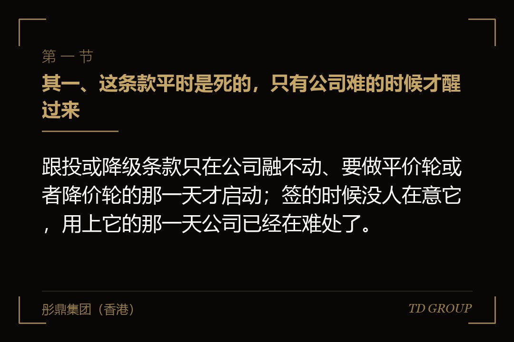
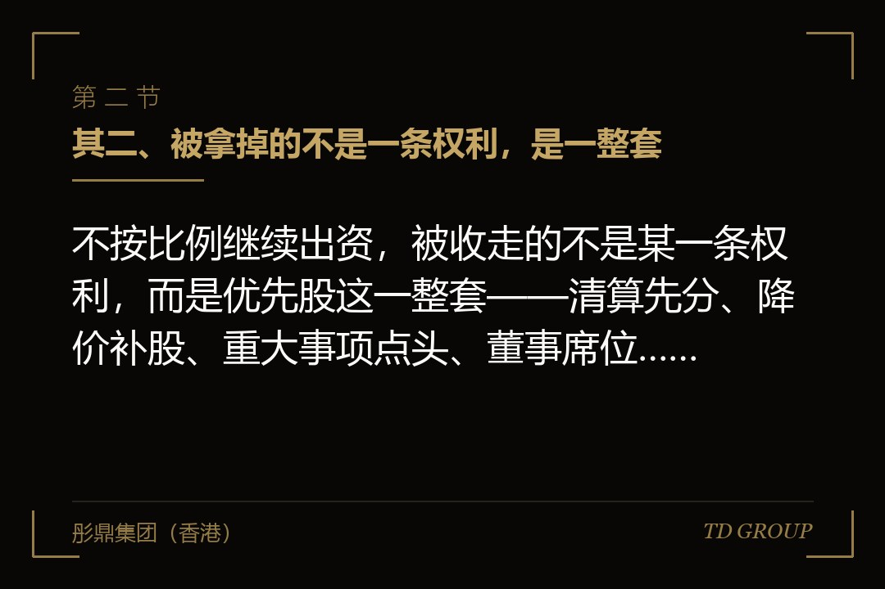
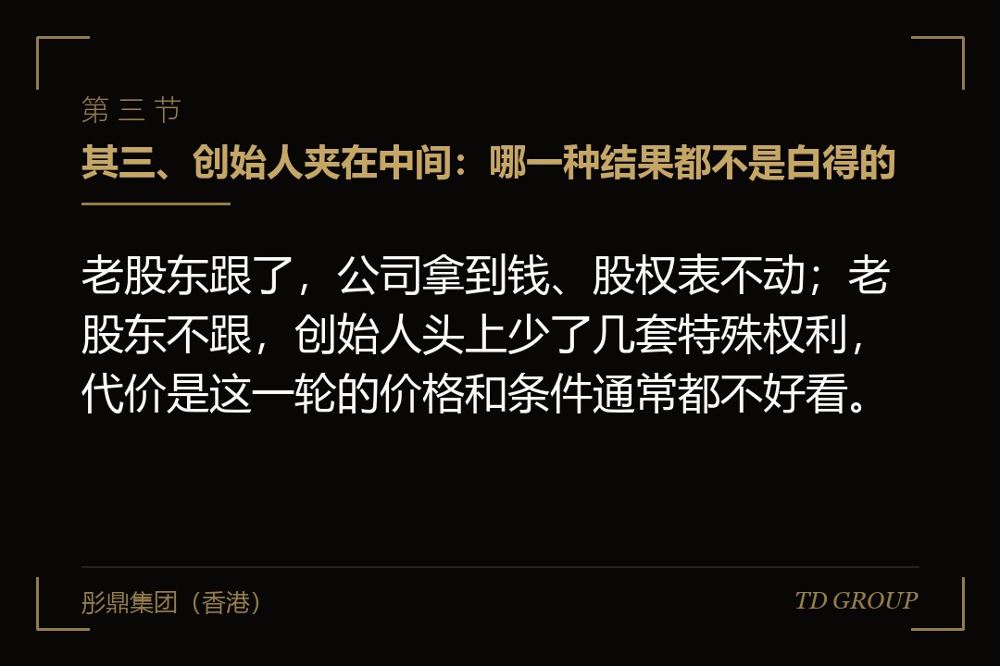

其一、这条款平时是死的，只有公司难的时候才醒过来

结论先行：跟投或降级条款只在公司融不动、要做平价轮或者降价轮的那一天才启动；签的时候没人在意它，用上它的那一天公司已经在难处了。
这条款业内叫 pay-to-play，直译过来是"要玩就得出钱"，写在投资协议或者股东协议里，通常只有短短几行：公司发起新一轮融资时，持有优先股的股东应当按其持股比例出资；未足额出资的，其优先股按约定比例转为普通股。
签这份协议那天，桌上没有人觉得这条会用上。上一轮刚涨过价，所有人心里的默认前提是同一个：下一轮一定比这一轮贵，到时候老股东抢着出钱还来不及，哪里需要拿条款去逼。
所以它是一条专为坏天气写的条款。触发前提通常写成"新一轮的每股价格不高于上一轮"，或者"董事会认定的合格融资轮次"——换句话说，这条款醒过来的那一刻，本身就是公司融不动了的信号。
前面那家做工业气体配送的企业，三轮里每一轮都签了这一条，三次都没有人多问一句。真正把这几行字翻出来逐字读的，是第四轮谈判开始的那个星期。
其二、被拿掉的不是一条权利，是一整套

结论先行：不按比例继续出资，被收走的不是某一条权利，而是优先股这一整套——清算先分、降价补股、重大事项点头、董事席位，一次打包换成普通股。
优先股和普通股的差别不在名字，在于挂在它上面的那一串约定。转成普通股这个动作，是把这一串约定一次性摘掉，而不是逐条谈判、逐条放弃。摘完之后他手上只剩一个持股比例，和任何一位普通股东站在同一排。
先没的是清算时的优先分配。公司将来被卖掉或者清算，优先股股东本来排在普通股前面先拿回自己的钱，转成普通股之后这个次序就没有了——分配次序怎么设计是另一件事，这里只说结果：那条队他不站了。
接着是反稀释。下一轮如果价格更低，优先股股东本来可以按约定把转换价格往下调，等于补一部分股回来。转成普通股之后这条补偿不存在了，具体怎么算属于另一个题目，本篇只关心它在这一刻消失。
然后是重大事项的一票否决。公司要卖、要再融、要改章程、要处置核心资产，本来这几件事得他点头；转成普通股之后按持股比例投票，他手上那几个百分点说了不算。这一条对创始人的意义最大——他头上少了一个能随时叫停的人。
再往后是董事席位和继续出资的优先权。席位没了，他不再坐在董事会里看每个月的经营数据；优先权没了，下一轮公司增资，公司没有义务先来问他要不要出。五样东西一次给完，不分先后，也不容他挑。
其三、创始人夹在中间：哪一种结果都不是白得的

结论先行：老股东跟了，公司拿到钱、股权表不动；老股东不跟，创始人头上少了几套特殊权利，代价是这一轮的价格和条件通常都不好看。
这条款名义上是新投资人写给老投资人的，逼他们要么继续出钱、要么让位。但真正夹在中间的是创始人，因为无论哪一种结果，接着往下过日子的都是他。
有家做光伏电站运维的企业，签第三轮时把这一条写了进去。两年后电站业主集体压服务费，公司要做一轮平价融资。四家老股东里，两家产业方跟了——它们本来就靠这家公司维护自己的电站，这笔钱对它们不只是投资。
另外两家财务机构没跟。创始人当时的心情很复杂：公司少拿了一笔本来可以拿到的钱，但那两家过去两年里对每一笔超过一定金额的开支都要问一遍，现在这道关卡自动消失了。
但这不是白得的。 新投资人愿意写这一条，是因为他很清楚自己进的这个价已经足够低，而价格低的原因是公司这一年确实难。创始人拿到的"上面清净了"，是用一轮不好看的估值换来的，而那个估值会写进股权表，跟着公司走到下一轮、走到将来的尽调里。
华尔街彤鼎俱乐部里有位做了十几年制造业的企业主说过一句实在话：这条款不是给你减负的，是把你难的那一年记在纸上，往后谁翻开都看得见。
其四、触发的判据写含糊，条款到用的那天等于没有
结论先行：条款写"新一轮"却不说指哪一轮，写"足额出资"却不说按什么口径算，到真要用它的那天，双方会拿着同一句话说出两个意思。
有家做宠物食品代工的企业，融过两轮。第三轮谈到一半，公司先做了一笔过桥性质的小额融资救急，价格随上一轮。等正式的第三轮开始，公司主张老股东要按这一条继续出资，有一家老机构不认——它说协议写的是"新一轮股权融资"，中间那笔已经构成新一轮，那一轮它出了钱，义务履行完了。
这场争论拖了五个星期，最后各让一步收场。真正的教训不在于谁有道理，而在于这句话本来可以在两年前用二十个字写清楚，当时却没有人愿意花那二十个字。
签的时候至少要写死四件事。其一，哪一轮算触发轮：所有新股发行都算，还是只有价格不高于上一轮的才算，过桥融资和员工股权池扩容要不要排除在外。
其二，按什么口径算"足额"：分母是该股东当时的持股比例，还是完全稀释之后的比例。其三，部分出资怎么办：出了一半的人是全部转成普通股，还是只按出资比例转一部分，两种写法结果差得很远。
其四，什么时候算完成：签了出资文件就算，还是钱到账才算。四件事只要有一件没写死，条款到用的那天就得重新谈一遍，而重新谈这件事，恰好发生在公司最没有筹码的时候。
其五、降级是自动发生，还是要开会才发生
结论先行：转换是交割那一刻自动完成，还是要开一次股东会、签一份文件才完成，决定了不出资的股东在那一刻还有没有说不的余地。
这是整条款里最容易被写坏的一处。协议如果写成"未足额出资的，其优先股于交割日自动转为普通股"，转换就是自动发生的结果，不需要任何人再签一次字；如果写成"应当转为普通股"，就留下了一个要人配合才能完成的动作。
差别在真用上那天会放大成一个死结。没出资的那位股东手上原本握着一票否决权，而要拿掉他这项权利的那份决议，恰恰属于要他点头的事项。 于是他可以否决掉那份摘走他权利的决议——条款白纸黑字写在那里，执行不下去。
前面那家做工业气体配送的企业算是运气好，协议写的是自动转换。交割当天要签的一叠文件里，没有一份需要那家没跟的机构签字，转换在交割那一秒完成，公司当天更新了股东名册。
董事席位是另一个要单独写的地方。股权自动转了，可那位董事仍然在册——除非协议同时写明"该股东委派的董事于转换之日视为自动辞任"，或者事先就拿到一份签好的辞任文件。只写股权怎么变、不写席位怎么退，人还坐在董事会里，该看的照样看得见。
其六、协议改了、章程没改，这条权利实际收不回来
结论先行：跟投或降级只写在股东协议里、公司章程一个字没改，转换在协议层面成立，在公司登记和对外效力上未必站得住。
股东协议是股东之间的约定，章程是公司对外的文件。优先股的那一串权利——清算次序、否决事项、董事委派——如果要在公司这一层真正生效，多数情况下需要章程里有对应的安排；反过来说，把这些权利拿掉，同样要在章程里同步拿掉。
只改协议不改章程，结果是半生不熟的状态：协议上他已经是普通股股东，章程里那些为优先股写的条款还挂在原处。协议与章程的关系是另一个题目，这里只说相关的那一点：转换完成之后，章程、股东名册与登记信息要一起动。
跨境架构里这件事要做两遍。境外持股主体那一层的章程和股东名册要改，境内经营主体那一层的登记也要改，两层的时间点应当落在同一个交割包里。分两次做，中间那段时间公司的股权状态在两份文件上写着两个样子，而尽调的人会同时看到这两份。
其七、别把它当解药：它会让这一轮更难谈，不是更好谈
结论先行：用得上跟投或降级，说明这一轮本来就在低点；而它写进条款那一刻起，老股东在这一轮里会变得更强硬，不是更配合。
创始人听懂这条款之后，常见的反应是想把它写进下一份协议，当成一件将来可以用来清理老股东的工具。这个念头要压住，理由有三个。
其一，老股东也会算账。他知道不出钱的代价是丢掉一整套权利，所以会在这一轮里把出钱的条件谈得更苛刻——要求更低的价格、更硬的清算次序、更细的知情安排。你用条款把他逼到墙角，他会用价格还回来。
其二，有些股东是真的出不了钱，跟看不看好这家公司无关。基金过了能投新钱的年份、母基金那头没有回款、机构内部换了负责人，这些事跟你没有一分钱关系。而条款不区分"不愿意"和"不能够"，它只认结果。
有家做连锁洗车的企业就吃了这个亏。它第二轮里有一家产业股东，手上握着几百个加油站的场地资源，公司三分之一的新店选址是这家股东带来的。第四轮做平价轮时它拿不出钱，条款照章执行，优先股转成普通股、董事席位收回。半年后公司再谈选址，那家股东的对接人换了一位，回话客气了很多，事情推得慢了很多。
其三，它治不了真正的病。公司之所以要做降价轮，是因为业务没跑出来，或者行业转向了，这两件事都不是把老股东降一级能解决的。条款能改变的是股权表长什么样，改变不了公司为什么走到这一步。
收口：六条自查，签之前和用之前各过一遍
结论先行：这条款要不要接、接了怎么写、真到那天怎么用，下面六个问题答完就有轮廓；六条都答不上来，就先别在这一轮里动它。
其一，触发轮怎么定义？协议里那句"新一轮"到底指哪一类融资，过桥融资、员工股权池扩容、老股转让要不要排除在外。其二，"足额"按什么口径算？分母是当时的持股比例还是完全稀释之后的比例，部分出资的人是全转还是按比例只转一部分。
其三，转换是自动的还是要签字的？如果是后者，那位股东手上有没有哪一项权利，正好可以用来卡住这份文件——这个问题在签约那天问只要五分钟，在交割那天问可能要五个星期。
其四，董事席位怎么退？协议里有没有那句"视为自动辞任"，或者手上有没有一份提前签好的辞任文件。其五，章程改不改？转换完成之后，章程、股东名册、登记信息三样有没有一起动，跨境架构的两层有没有落在同一个交割包里。
其六，你真的想用它吗？把它写进条款是一回事，在某个具体的轮次里按下这个开关是另一回事。按之前先问自己一句：我现在是在解决一个问题，还是在处理一段关系。
华尔街彤鼎俱乐部里被问得最多的，从来不是这条款该怎么写，而是"我们这一轮该不该提"。关键在于，这一条从来不是用来赢一场谈判的，它是用来在坏天气里把出钱的人和不出钱的人分开——分完之后，公司还得靠出钱的那批人活下去。
以上为市场经验性表述，不构成法律、税务意见。条款的效力、章程修订与登记程序，应由具备相应资质的律师出具意见，以主管机关当时有效的规则与口径为准。彤鼎集团（香港）有限公司为企业管理咨询机构，持牌事项由具备相应资质的合作机构承做。